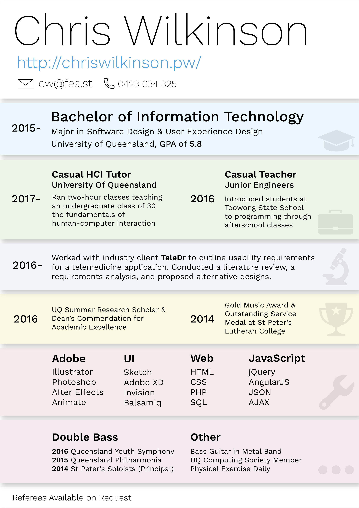
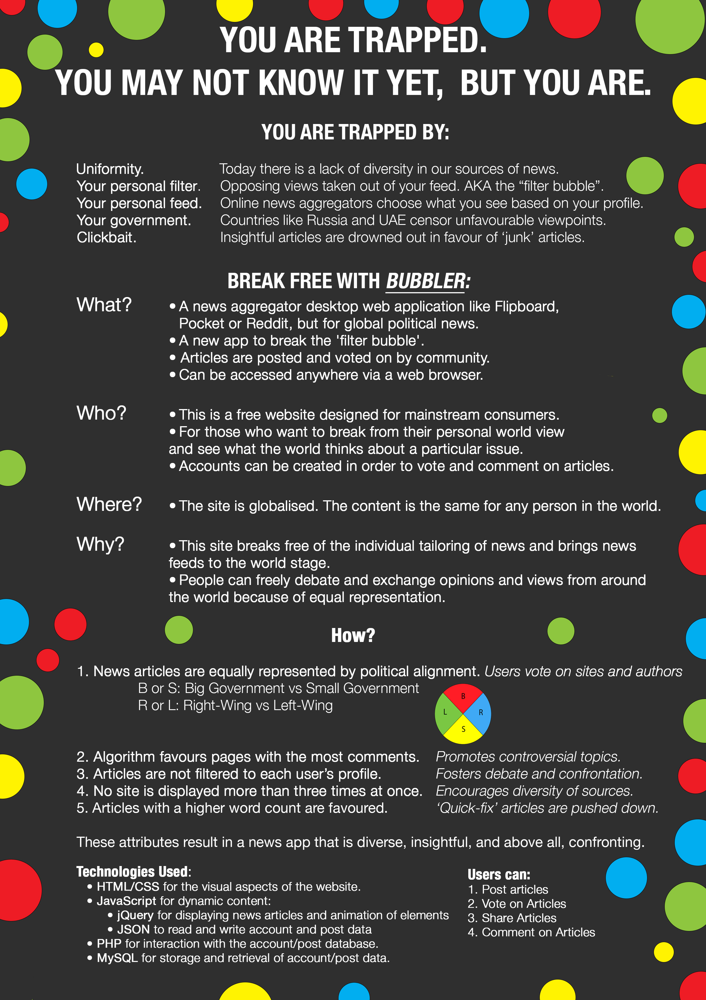
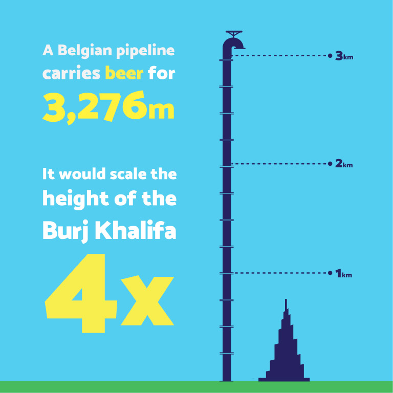

These are some of my favourite small designs that I have made recently:
This is an app I am working on to explore how affordance-based design can be used to teach users how to use an app without the use of a tutorial or help screen. This means 'inferring' functionality through means of animations and interface metaphors. A concept video created in Adobe After Effects to demonstrate the animations. This concept will be further developed this year.
This is my Resume created in Adobe Illustrator. It features the use of various design principles such consistency and alignment. Various colours are used to grab the viewer's attention. Design was iterated upon by peer feedback and review.
This is a promotional poster designed to give an overview of my idea for a brainstorming period.
This is an infographic representing the length of the Bruges Pipeline. All elements were made by hand in Adobe Illustrator. I compared the Bruges Pipeline to the world's tallest building to give viewers a sense of scale.
